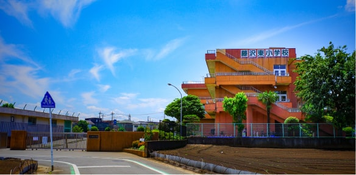

武蔵藤沢駅徒歩最短8分、小学校まで徒歩2分。
都心へのアクセス性に優れ、時間が穏やかに流れる場所。
さぁ、ワンダフルな暮らしを！
入間市、武蔵藤沢エリア。
ここは、近年の区画整理事業により利便性が充実した地域であり、同時に良質な住宅地として生まれ変わった場所です。
大きな公園、スーパーやドラッグストア、レストランや活気ある個人店が多いのが特徴ですが、
その反面、閑静な住宅地が広がり、暮らしやすさに満ち溢れていると言っても過言ではありません。
特に分譲地のほぼ正面には、藤沢東小学校が位置しており、
小学性のお子様がいらっしゃる親御さんには安心の環境と云えるでしょう。
毎日を快適に、そして安心して過ごせる7家族のためのステージ。
ご家族のワンダフルな一歩を、ここ入間市武蔵藤沢の地でスタートしてはいかがでしょうか。
子育て世代におススメ！
-

入間市立藤沢東小学校 徒歩1～2分
大きな空の下で、閑静な住宅地の中心に位置。
同校の伝統は「あいさつ運動」。 -

西武池袋線武蔵藤沢駅 徒歩8～9分
2008年に新駅舎に。ロータリーも整備され、美しい景観が魅力です。
-
家族の願いを叶える
ZEH水準の注文住宅。住協グループの家は、自由設計。あんな間取りの家に住みたい、こんなデザインの家に住みたい、夫婦の憩いの場が欲しい、ウッドデッキが欲しい等、あなただけの専属の設計士が、夢を叶えるお手伝いをいたします。
住協グループの家は、自由設計。あなただけの専属の設計士が、夢を叶えるお手伝いをいたします。

※イメージ
-
良質な住環境と、
毎日の利便性が共存。武蔵藤沢は、多くの買い物施設で充実しながらも、快適で良質な住環境が広がるエリア。暮らしやすさという面では子育て世代にも、勿論子育てを終えた世代にも自信を持っておススメできる永住地であると云えます。
武蔵藤沢は、多くの買い物施設で充実しながらも、快適で良質な住環境が広がるエリア。

※再開発エリアである西口大通り
-
子どもを中心とした
コミュニティ形成新しくスタートする7の街区だから、子どもを中心にコミュニティが形成されやすい特徴があります。「引っ越したけど近所に馴染めない」といった悩みがも少なく、ストレスのない新生活が期待できます。
新しくスタートする7の街区だから、子どもを中心にコミュニティが形成されやすい特徴があります。
※イメージ